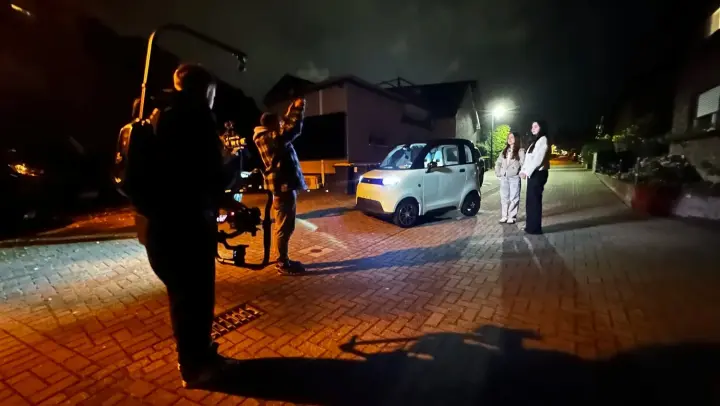
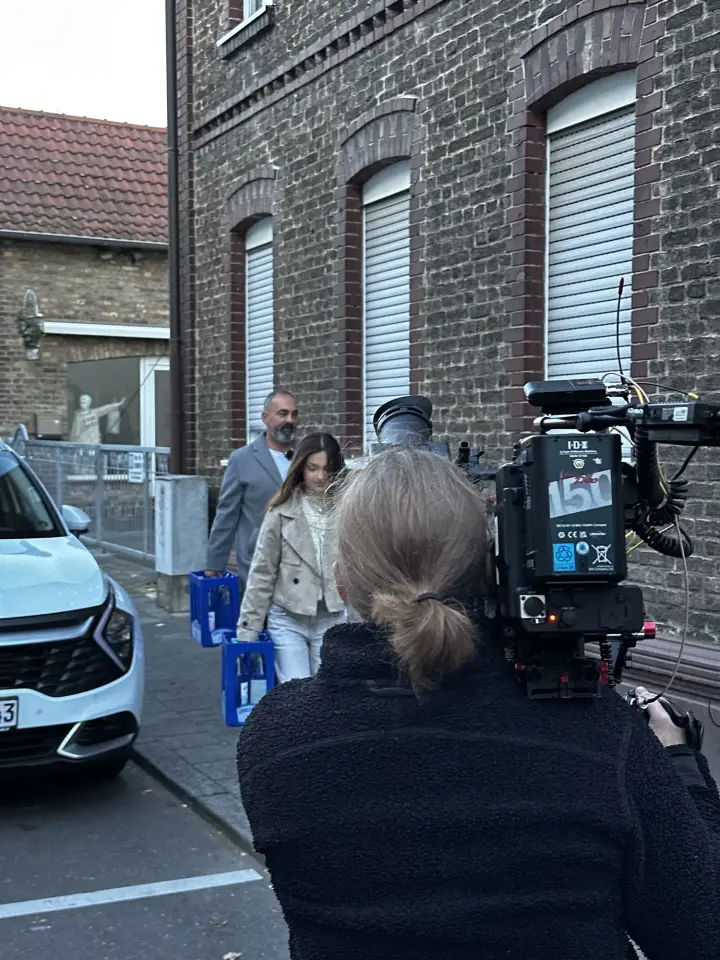
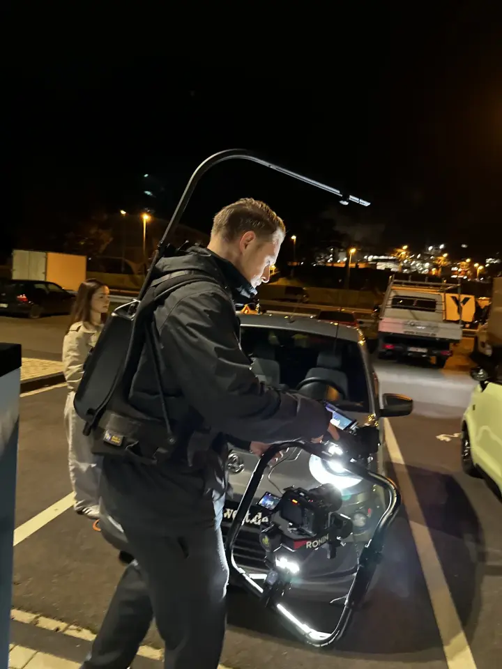
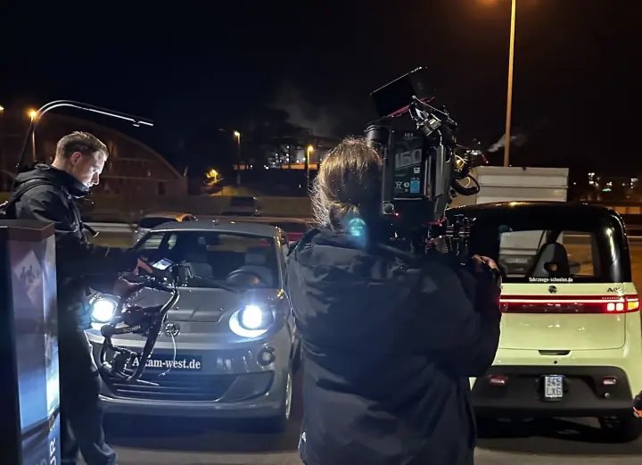
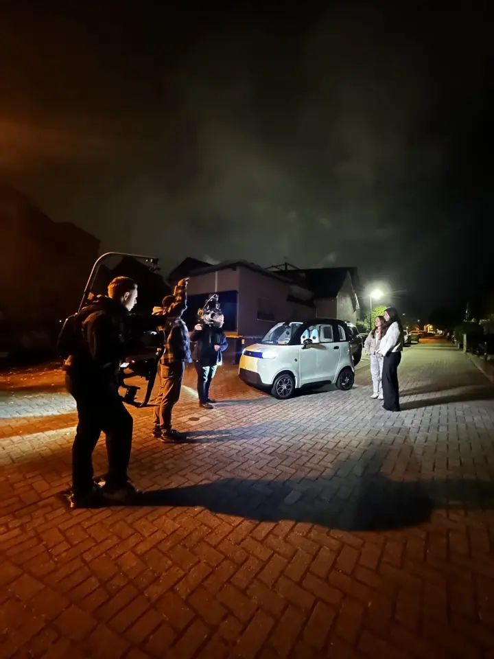
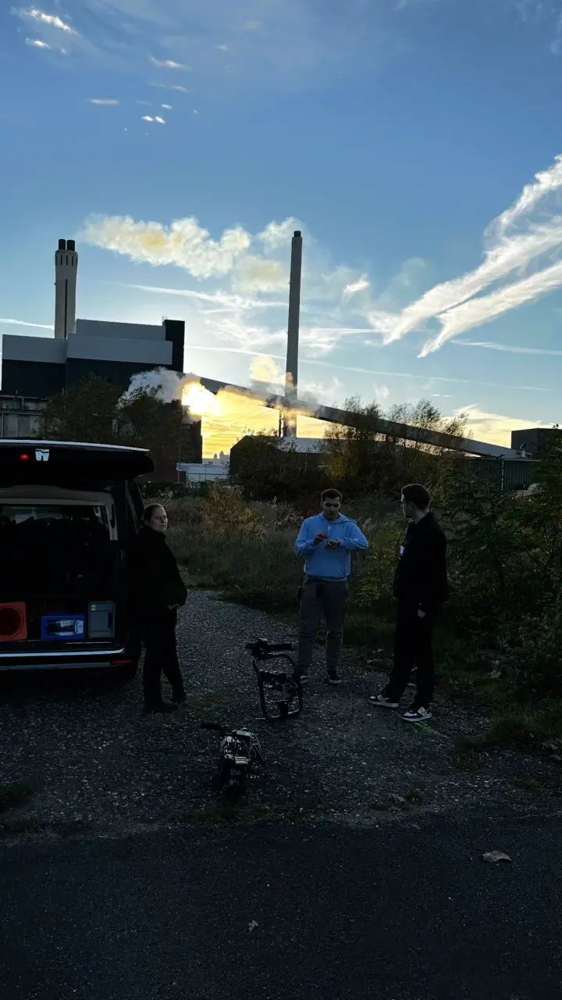
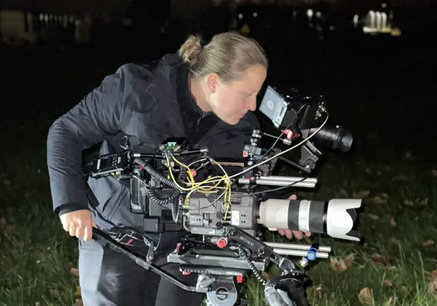

Ansehen auf rtl2.deUnsere Leistungen
- Themen-Entwicklung
- Producing
- Produktionsleitung
- Planung
- Dreh vor Ort / EB-Team (Multikamera, 1x nah, 1x weit, Drohne)
- Drehender Autor
- Schnitt Autor
- Filmeditor
Behind the Scenes
6 Bilder · seitlich wischen





